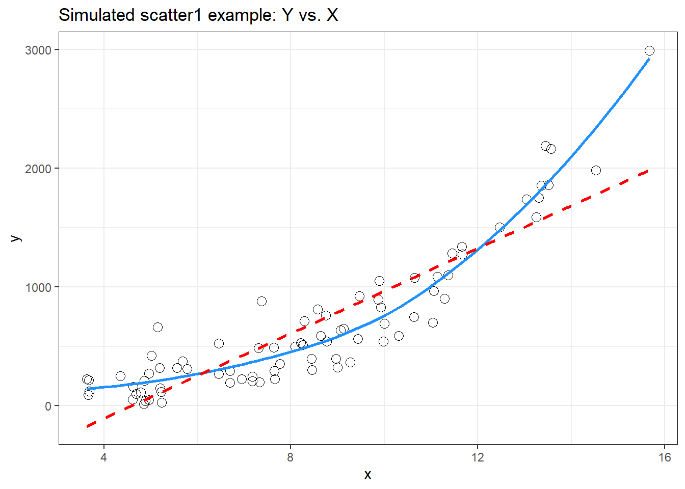
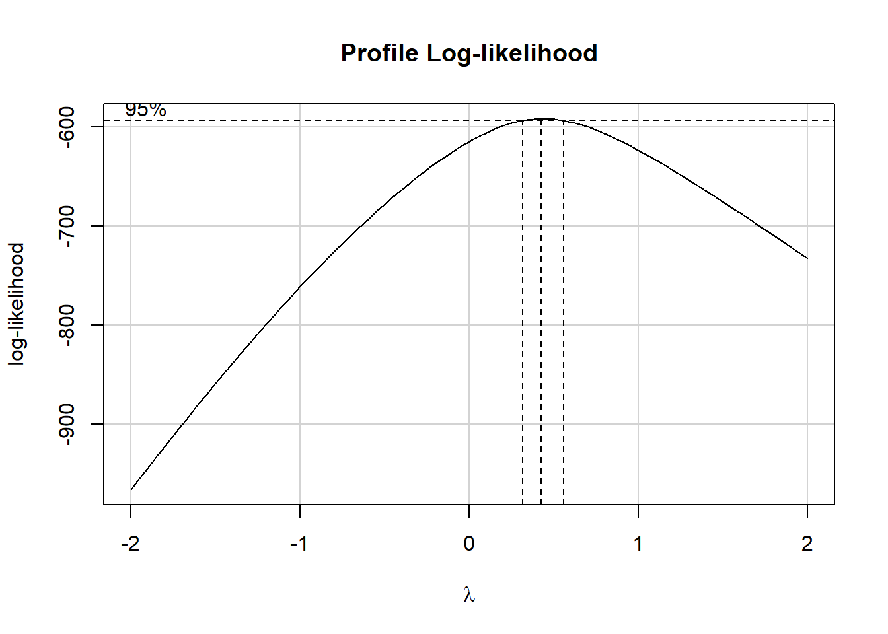
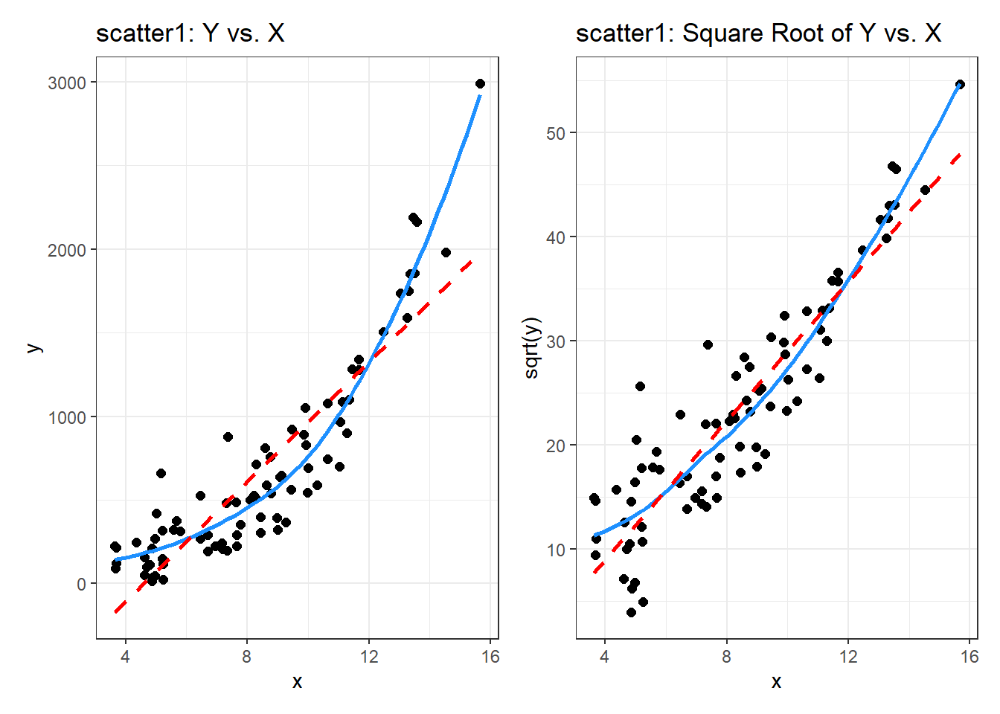
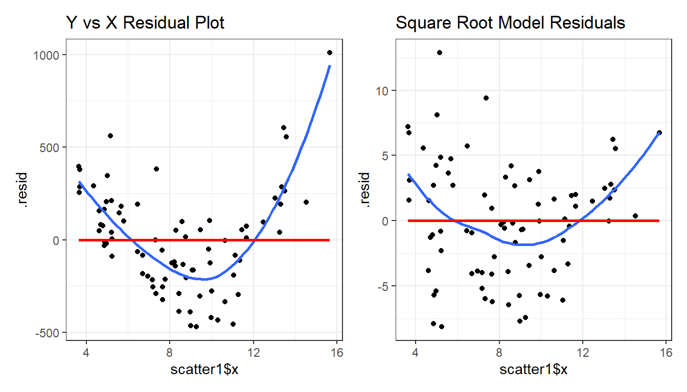
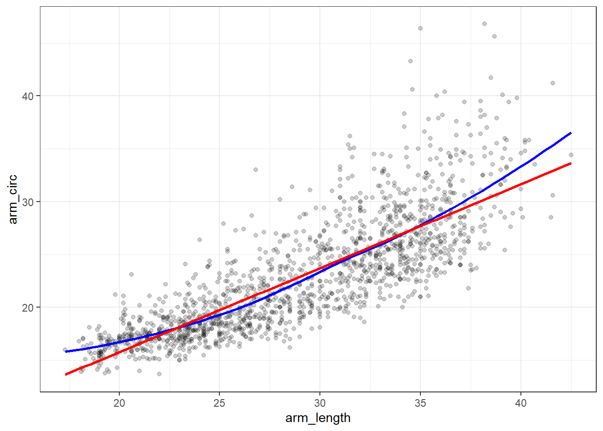
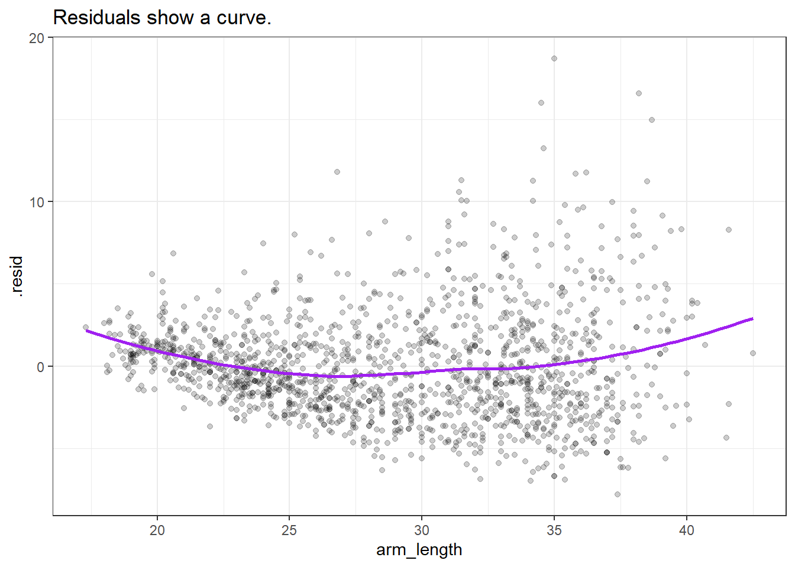
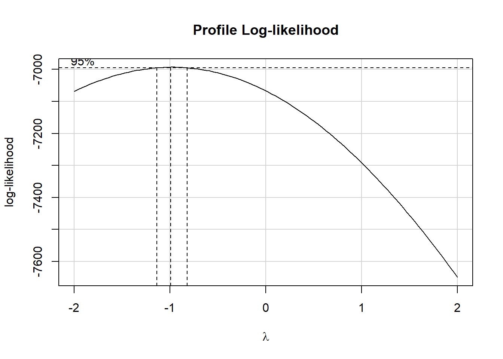

14 Linearizing Transformations
14.1 Linearize The Association between Quantitative Variables
Confronted with a scatterplot describing a monotone association between two quantitative variables, we may decide the data are not well approximated by a straight line, and thus, that a least squares regression may not be not sufficiently useful. In these circumstances, we have at least two options, which are not mutually exclusive:
- Let the data be as they may, and summarize the scatterplot using tools like loess curves, polynomial functions, or cubic splines to model the relationship.
- Consider re-expressing the data (often we start with re-expressions of the outcome data [the Y variable]) using a transformation so that the transformed data may be modeled effectively using a straight line.
14.2 Setup: Packages Used Here
14.3 The Box-Cox Plot
As before, Tukey’s ladder of power transformations can guide our exploration.
| Power (\(\lambda\)) | -2 | -1 | -1/2 | 0 | 1/2 | 1 | 2 |
|---|---|---|---|---|---|---|---|
| Transformation | 1/y2 | 1/y | 1/\(\sqrt{y}\) | log y | \(\sqrt{y}\) | y | y2 |
The Box-Cox plot, from the boxCox function in the car package, sifts through the ladder of options to suggest a transformation (for Y) to best linearize the outcome-predictor(s) relationship.
14.3.1 A Few Caveats
- These methods work well with monotone data, where a smooth function of Y is either strictly increasing, or strictly decreasing, as X increases.
- Some of these transformations require the data to be positive. We can rescale the Y data by adding a constant to every observation in a data set without changing shape.
- We can use a natural logarithm (
login R), a base 10 logarithm (log10) or even sometimes a base 2 logarithm (log2) to good effect in Tukey’s ladder. All affect the association’s shape in the same way, so we’ll stick withlog(base e). - Some re-expressions don’t lead to easily interpretable results. Not many things that make sense in their original units also make sense in inverse square roots. There are times when we won’t care, but often, we will.
- If our primary interest is in making predictions, we’ll generally be more interested in getting good predictions back on the original scale, and we can back-transform the point and interval estimates to accomplish this.
14.4 A Simulated Example
set.seed(999);
x.rand <- rbeta(80, 2, 5) * 20 + 3
set.seed(1000);
y.rand <- abs(50 + 0.75*x.rand^(3)
- 0.65*x.rand + rnorm(80, 0, 200))
scatter1 <- tibble(x = x.rand, y = y.rand)
rm(x.rand, y.rand)
ggplot(scatter1, aes(x = x, y = y)) +
geom_point(shape = 1, size = 3) +
## add loess smooth
geom_smooth(method = "loess", se = FALSE,
col = "dodgerblue", formula = y ~ x) +
## then add linear fit
geom_smooth(method = "lm", se = FALSE,
col = "red", formula = y ~ x, linetype = "dashed") +
labs(title = "Simulated scatter1 example: Y vs. X")
Having simulated data that produces a curved scatterplot, I will now use the Box-Cox plot to lead my choice of an appropriate power transformation for Y in order to “linearize” the association of Y and X.
boxCox(scatter1$y ~ scatter1$x) 
powerTransform(scatter1$y ~ scatter1$x)Estimated transformation parameter
Y1
0.4368753 The Box-Cox plot peaks at the value \(\lambda\) = 0.44, which is pretty close to \(\lambda\) = 0.5. Now, 0.44 isn’t on Tukey’s ladder, but 0.5 is.
| Power (\(\lambda\)) | -2 | -1 | -1/2 | 0 | 1/2 | 1 | 2 |
|---|---|---|---|---|---|---|---|
| Transformation | 1/y2 | 1/y | 1/\(\sqrt{y}\) | log y | \(\sqrt{y}\) | y | y2 |
If we use \(\lambda\) = 0.5, on Tukey’s ladder of power transformations, it suggests we look at the relationship between the square root of Y and X, as shown next.
p1 <- ggplot(scatter1, aes(x = x, y = y)) +
geom_point(size = 2) +
geom_smooth(method = "loess", se = FALSE,
formula = y ~ x, col = "dodgerblue") +
geom_smooth(method = "lm", se = FALSE,
formula = y ~ x, col = "red", linetype = "dashed") +
labs(title = "scatter1: Y vs. X")
p2 <- ggplot(scatter1, aes(x = x, y = sqrt(y))) +
geom_point(size = 2) +
geom_smooth(method = "loess", se = FALSE,
formula = y ~ x, col = "dodgerblue") +
geom_smooth(method = "lm", se = FALSE,
formula = y ~ x, col = "red", linetype = "dashed") +
labs(title = "scatter1: Square Root of Y vs. X")
p1 + p2
By eye, I think the square root plot better matches the linear fit.
14.5 Checking on a Transformation or Re-Expression
In addition to plotting the impact of the transformation, we can do at least two other things to check on our transformation.
- We can calculate the correlation of our original and re-expressed associations.
- We can go ahead and fit the regression models using each approach and compare the plots of studentized residuals against fitted values from the data to see if the re-expression reduces the curve in that residual plot, as well.
The last of these options is by far the most important in practice, and it’s the one we’ll focus on going forward, but we’ll demonstrate both of these new approaches here.
14.5.1 Checking the Correlation Coefficients
Here, we calculate the correlation of original and re-expressed associations.
The Pearson correlation is a little stronger after the transformation. as we’d expect.
14.5.2 Comparing the Residual Plots
We can fit the regression models, obtain plots of residuals against fitted values, and compare them to see which one has less indication of a curve in the residuals.
model.orig <- lm(scatter1$y ~ scatter1$x)
model.sqrt <- lm(sqrt(scatter1$y) ~ scatter1$x)
p1 <- ggplot(augment(model.orig), aes(x = scatter1$x, y = .resid)) +
geom_point() +
geom_smooth(method = "loess", formula = y ~ x, se = FALSE) +
geom_smooth(method = "lm", formula = y ~ x, se = FALSE, col = "red") +
labs(title = "Y vs X Residual Plot")
p2 <- ggplot(augment(model.sqrt), aes(x = scatter1$x, y = .resid)) +
geom_point() +
geom_smooth(method = "loess", formula = y ~ x, se = FALSE) +
geom_smooth(method = "lm", formula = y ~ x, se = FALSE, col = "red") +
labs(title = "Square Root Model Residuals")
p1 + p2
What we’re looking for in such a plot is the absence of a curve, among other things, we want to see “fuzzy football” shapes.
As compared to the original residual plot, the square root version, is a modest improvement in this regard. It does look a bit less curved, and a bit more like a random cluster of points, so that’s nice. Usually, we can do a little better in real data, as shown in the next example from the NNYFS data we introduced in Chapter 10.
14.6 An Example from the NNYFS data
nnyfs <- read_rds("data/nnyfs.Rds")Using the subjects in the nnyfs data with complete data on the two variables of interest, let’s look at the relationship between arm circumference (the outcome, shown on the Y axis) and arm length (the predictor, shown on the X axis.)
nnyfs_c <- nnyfs |>
filter(complete.cases(arm_circ, arm_length)) |>
select(SEQN, arm_circ, arm_length)14.6.1 Pearson correlation and scatterplot
Here is the Pearson correlation between these two variables.
arm_length arm_circ
arm_length 1.0000000 0.8120242
arm_circ 0.8120242 1.0000000Here’s the resulting scatterplot.
ggplot(nnyfs_c, aes(x = arm_length, y = arm_circ)) +
geom_point(alpha = 0.2) +
geom_smooth(method = "loess", formula = y ~ x,
se = FALSE, color = "blue") +
geom_smooth(method = "lm", formula = y ~ x,
se = FALSE, color = "red")
While the Pearson correlation is still quite strong, note that the loess smooth (shown in blue) bends up from the straight line model (shown in red) at both the low and high end of arm length.
Note also the use of alpha = 0.2 to show the points with greater transparency than they would be shown normally (the default setting is no transparency with alpha = 1.)
14.6.2 Plotting the Residuals
Now, let’s build a plot of residuals from the straight line model plotted against the arm length. We can obtain these residuals using the augment() function from the broom package.
m1 <- lm(arm_circ ~ arm_length, data = nnyfs_c)
nnyfs_c_aug1 <- augment(m1, data = nnyfs_c)
nnyfs_c_aug1# A tibble: 1,511 × 9
SEQN arm_circ arm_length .fitted .resid .hat .sigma .cooksd .std.resid
<dbl> <dbl> <dbl> <dbl> <dbl> <dbl> <dbl> <dbl> <dbl>
1 71918 25.4 27.7 21.9 3.51 0.000695 3.21 0.000416 1.09
2 71919 26 38.4 30.4 -4.38 0.00253 3.21 0.00237 -1.37
3 71920 37.9 35.9 28.4 9.50 0.00167 3.20 0.00735 2.96
4 71921 15.1 18.3 14.4 0.669 0.00304 3.21 0.0000663 0.209
5 71922 29.5 34.2 27.0 2.45 0.00124 3.21 0.000362 0.764
6 71923 27.9 33 26.1 1.80 0.00100 3.21 0.000159 0.562
7 71924 17.6 26.5 20.9 -3.34 0.000788 3.21 0.000427 -1.04
8 71925 17.7 24.2 19.1 -1.41 0.00113 3.21 0.000110 -0.441
9 71926 19.9 26 20.5 -0.642 0.000844 3.21 0.0000169 -0.200
10 71927 17.3 20 15.8 1.52 0.00234 3.21 0.000263 0.474
# ℹ 1,501 more rowsOK. So the residuals are now stored in the .resid variable. We can create a residual plot, as follows.
ggplot(nnyfs_c_aug1, aes(x = arm_length, y = .resid)) +
geom_point(alpha = 0.2) +
geom_smooth(method = "loess", col = "purple",
formula = y ~ x, se = FALSE) +
labs(title = "Residuals show a curve.")
14.6.3 Using the Box-Cox approach to identify a transformation
boxCox(nnyfs_c$arm_circ ~ nnyfs_c$arm_length) 
powerTransform(nnyfs_c$arm_circ ~ nnyfs_c$arm_length)Estimated transformation parameter
Y1
-0.9783135 This suggests that we should transform the arm_circ data by taking its inverse (power = -1.) Let’s take a look at that result.
14.6.4 Plots after Inverse Transformation
Let’s build (on the left) the revised scatterplot and (on the right) the revised residual plot after transforming the outcome (arm_circ) by taking its inverse.
nnyfs_c <- nnyfs_c |>
mutate(inv_arm_circ = 1/arm_circ)
p1 <- ggplot(nnyfs_c, aes(x = arm_length, y = inv_arm_circ)) +
geom_point(alpha = 0.2) +
geom_smooth(method = "loess", formula = y ~ x,
se = FALSE, color = "blue") +
geom_smooth(method = "lm", formula = y ~ x,
se = FALSE, color = "red") +
labs(title = "Transformation reduces curve")
m2 <- lm(inv_arm_circ ~ arm_length, data = nnyfs_c)
nnyfs_c_aug2 <- augment(m2, data = nnyfs_c)
p2 <- ggplot(nnyfs_c_aug2, aes(x = arm_length, y = .resid)) +
geom_point(alpha = 0.2) +
geom_smooth(method = "loess", col = "purple",
formula = y ~ x, se = FALSE) +
labs(title = "Residuals much improved")
p1 + p2 +
plot_annotation(title = "Evaluating the Inverse Transformation")
14.7 Coming Up
The rest of Part A of these Course Notes walk through additional case studies, showing some new ideas, but primarily providing context for some tools we’ve already seen.